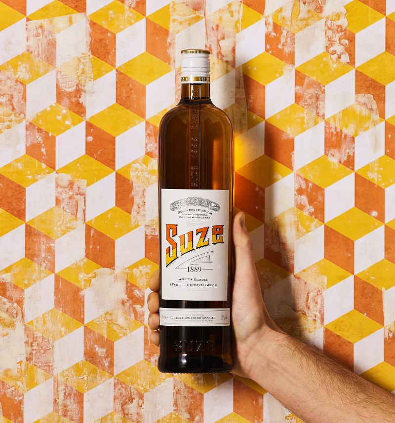
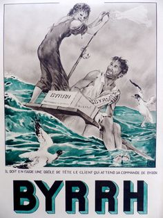
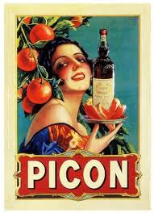

| N° du top |
Nom |
Fondateur |
Année de création |
Origine |
Description |
Conseils de dégutation |
Prix d'une bouteille |
Illustration |
| 1 |
Suze |
distillerie Rousseau & Laurent |
1889 |
Controversée |
- Mélange d'infusion et d'esprit de gentiane (dont 50 % de racines sauvages)
d'extraits de plantes aromatiques macérées et complété de nombreux extraits de plantes aromatiques.
- Couleur jaune
- Degré d'alcool : 15° (Suisse 20°)
- Sucre : 200 g/litre
|
- Pure,pour les puristes
- On the rocks, pour la classe
- En tonic, pour se rafraichir en terasse (c'est sublime)
|
Environ 7€ |
 |
| 2 |
Byrrh |
Simon Violet |
1866 |
France |
- Apéritif à base de vin, Byrrh a pour spécificité d'être aromatisé au quinquina.
Les raisins sont transformés en mistelles qui sont ensuite assemblées avec des vins rouges et secs de caractère.
- Couleur rouge
- Degré d'alcool : 16°
- Sucre : 120 g/litre
|
- On the rocks, bien frais
- Il s'accompagne volontiers d'un zeste de citron ou d'un peu de crème de cassis
|
Environ 9€ |
 |
| 3 |
Picon |
Gaetan Picon |
1837 |
Algérie |
- Il est élaboré à base de zestes d'oranges frais et séchés puis macérés dans une solution d'alcool. Le Picon nécessite également des racines de gentiane et du quinquina, tous deux macérés également. Du sirop de sucre et du caramel sont ajoutés par la suite.
- Couleur indéterteminée
- Degré d'alcool : 18°
- Sucre : 100 g/litre
|
- Pure pour les novices
- Sur lit de bière alsacienne pour les professionnels
|
Environ 12€ |
 |